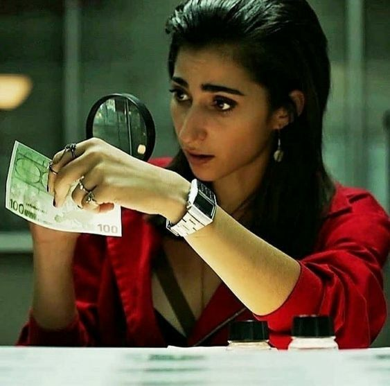
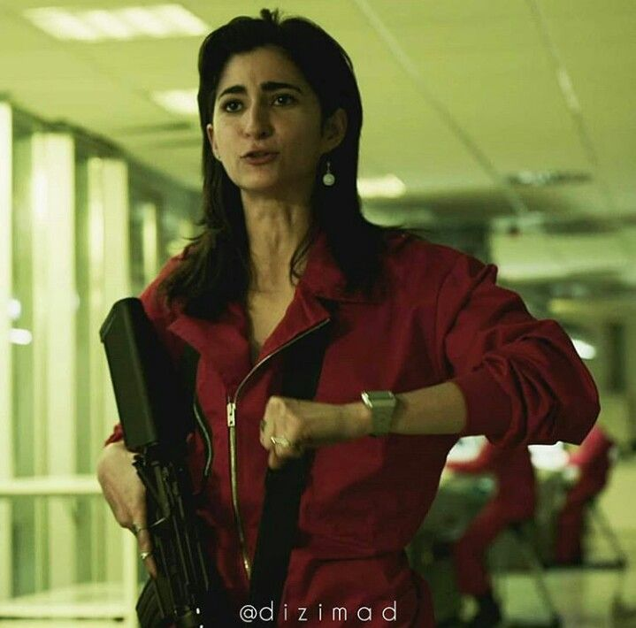
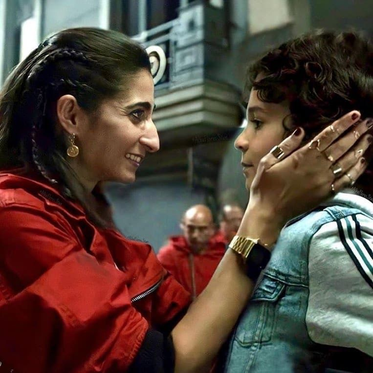
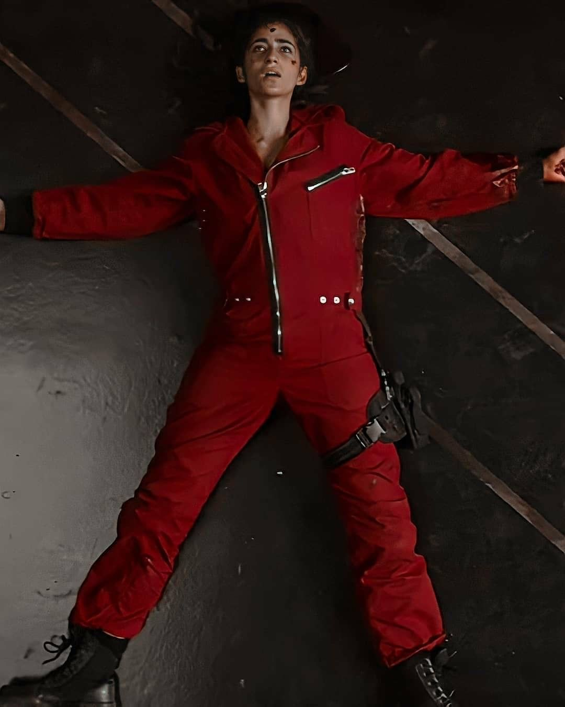

Nairobi Professorun komandasında olan ən bacarıqlı üzvlərdən biridir. Onun əsas işi saxta pul hazırlamaq və istehsalın keyfiyyətinə nəzarət etməkdir. Buna görə Professor onu xüsusilə vacib üzv kimi komandaya seçir.


Nairobi'nin Axel adlı oğlu var. Keçmişində etdiyi səhvlər və həbs həyatı səbəbindən oğlunun himayəsini itirib. İlk böyük qarətdə iştirak etməsinin əsas motivlərindən biri də oğlunu geri qaytarmaq və onunla yeni həyat qurmaqdır.

Nairobi Bank of Spain qarəti zamanı ağır yaralanır. Komanda onu xilas etməyə çalışsa da, sonradan Gandía tərəfindən öldürülür.
